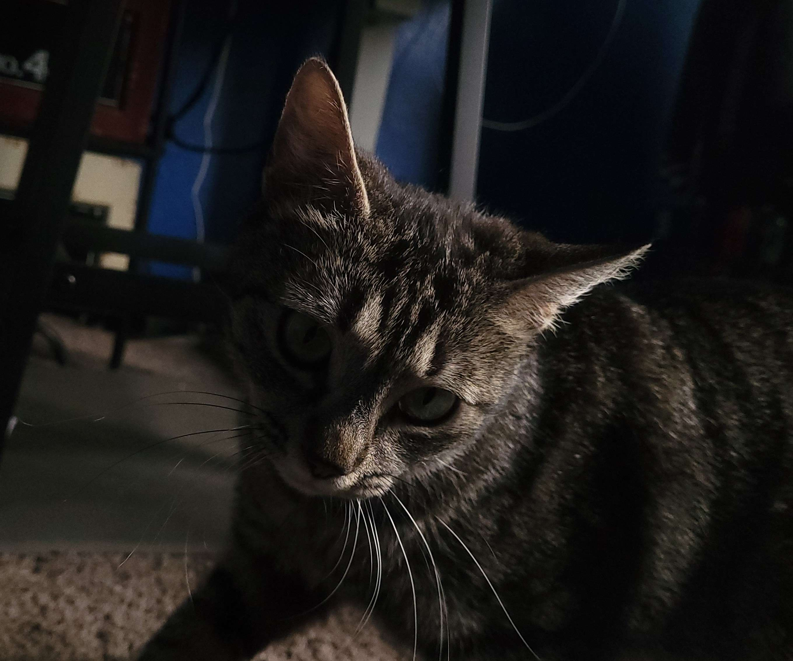
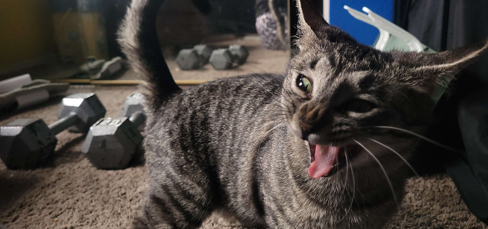
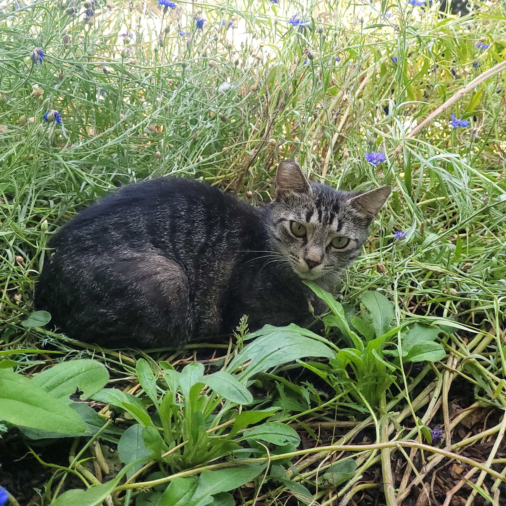

Pogo is a very strange cat. She was found inside of the engine of my parents car. She was named pogo because she could jump really well, and managed to jump out of the carriers we put her in while grabbing her. She spent a while being an inside cat, but has ended up being a fully outside cat. She had 2 kittens before we were able to get her spayed. Shes a skittish cat but despite that will meow for attention until you give it to her.
  